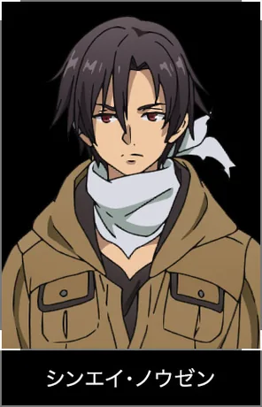

Image indisponible
Le reste de la fiche reste utilisable.
Le reste de la fiche reste utilisable.
Spearhead
Shinei Nouzen
Shin
シンエイ・ノウゼン
Novel / recherche : Shinei Nouzen / Shinei Nōzen / Shin / Nouzen / Nozen
Personal Name : Undertaker
Chef de l’escadron Spearhead. Très calme, excellent pilote et grand lecteur.